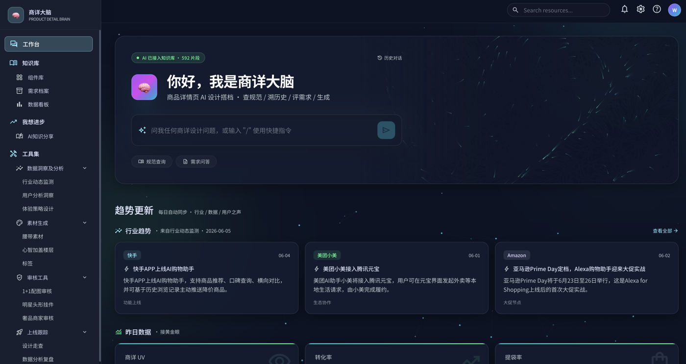

可调用 Skill
自然语言触发，有清晰输入、输出和迭代记录。
Relay 转 Design Wiki设计稿结构化录入
查看详情 ↗Design ReviewV15 / V16 规范检查
调用 ↗Design MD → Spec Page规范文档生成发布页
调用 ↗Repository-driven community content model
社区要回答五个问题：这周发生了什么、什么值得使用、16.0 规范更新到哪里、现在还缺什么，以及谁推动了这一切。
仓库快照：本地 2C-DesignWiki，2026-07-10。这里只表示当前资产规模，不等同于使用量或影响力。
Operating model
仓库负责提供事实，运营负责判断价值。每周不需要重新编辑所有页面，而是围绕变化、重点工程、精选内容、贡献和共建机会完成一次增量更新。
新增或更新的规范、知识、Skill、工具，以及本周真实贡献。
读取上次同步后的合并记录，生成数量、对象与变化摘要草稿。
确认哪些变化值得被突出，补充标题、价值说明与发布顺序。
本周更新的规范、受影响组件、版本变化和待确认问题。
读取 design bundle、CHANGELOG 和关联 PR，生成增量清单。
选择关键更新，解释对设计工作的影响，明确下一步建设缺口。
围绕一个真实任务，组合相关规范、知识、Skill、工具或工作台。
根据近期更新、关联关系和维护状态生成候选内容。
确定主题、推荐理由和内容组合，避免按文件类型机械罗列。
已经发生的贡献、最近贡献人，以及当前可以认领的明确任务。
依据已合并 PR 归因贡献，并从开放 Issue 和内容缺口生成候选任务。
核对贡献类型，把缺口改写为有角色、有产出、有完成标准的共建任务。
经确认可公开的调用摘要、问题反馈、优化建议与结果案例。
接收 Agent / Zero 形成并进入仓库的结构化使用记录。
审核真实性、隐私与代表性，决定是否进入首页或对应内容详情。
重复、长期无人维护、低价值或可升级为标准流程的公共能力。
根据更新、使用和维护记录生成待治理对象清单。
决定合并、拆分、归档或升级，并同步维护责任与后续动作。
拉取变化、字段校验、贡献归因、关联匹配、数量统计和摘要草稿。
选题、推荐理由、优先级、共建任务设计、隐私审核和治理决策。
01 · Weekly pulse
周更不该只报“新增多少篇”，还要说明更新对象、解决的问题、关联的业务场景和贡献人。数字负责建立节奏，变化摘要负责建立价值感。
本周变化摘要
示例结构：本周新增哪些公共能力、哪些规范完成升级、哪些知识完成更新，以及哪些方向仍在等待共建。
不仅显示篇数，还突出组件名、版本和本次变化。
按主题归纳，说明知识解决的问题与适用范围。
说明解决什么任务、谁共建、如何进入使用现场。
只统计真实合并记录，展开贡献摘要而非只报 PR 数。
02 · Editorial story
精选不应按“Skill、规范、工具”各推一个孤立卡片。更有价值的方式，是围绕一个正在发生的设计任务，把相关知识、工具、规范和工作台组合起来。
本期主题 · 16.0 设计系统升级
这是仓库里最清楚的一条能力链：基础 Token 和组件规范提供知识，Relay 转 Wiki Skill 完成结构化录入，spec-page 形成发布物，垂类工作台继续消费这些上下文。

03 · Capability shelf
首页只呈现可直接进入任务的能力。设计知识和规范在这里作为能力的上下文出现，完整建设情况则放到后面的 Wiki 地图。
自然语言触发，有清晰输入、输出和迭代记录。
单点解决高频问题，强调入口、截图、维护人与适用边界。
围绕一个业务场域，组合知识库、Skill 和工具。
04 · V16 design system progress
这是当前最重要的公共工程。页面既要呈现整体建设进度，也要让大家看懂本周更新了哪些规范、影响哪些组件、还有哪些问题等待确认。
首页重点展示规范更新本身，而不是 Wiki 目录状态。所有进展都应能追溯到对应文档、版本和贡献记录。
色彩、文本、圆角、线、材质、空间布局与图标已形成机器可读文档。
组件按 design / spec / variants / behaviors / CHANGELOG 形成统一 bundle。
Relay 录入、规范检查、spec-page 与总站聚合已经形成完整工具链。
Error 色谱缺值、字体字重去向和 full 胶囊圆角等仍需设计侧确认。
05 · Contribution & co-building
贡献动态来自已合并 PR；共建机会来自仓库缺口、待验证状态和开放 Issue。两者结合，社区才不只是荣誉墙。
以下是已接入社区协议的 Relay Skill 真实合并记录样例。


不是泛泛地“欢迎贡献”，而是给出清晰缺口、需要的角色和完成标准。
Content expression rules
不再把所有内容都塞进同一种卡片。页面表达应顺着用户的判断方式：它是什么、什么时候有用、依据是什么、谁维护、怎么继续参与。
版本变化摘要 + 代表组件，不做图片卡片墙。
使用边界、Token、正反例、CHANGELOG、贡献人。
design.md
spec.md
CHANGELOG.md问题式标题 + 一句话结论 + 适用场景。
知识来源、核心方法、适用边界、关联规范。
frontmatter
knowledge/*.md解决任务 + 使用入口 + 最近贡献。
输入输出、调用范式、版本、贡献记录、反馈方式。
SKILL.md
community.yaml一张真实界面 + 能力构成 + 共创团队。
知识覆盖、内置 Skill / 工具与维护机制。
workspace metadata
目录索引名称、版本、贡献和更新记录来自仓库；推荐理由和专题编排可以由运营补充。
使用次数、评分、节省时间、验证状态必须有真实来源，不能用 demo 数字代替。
每个内容最终都应落到“去使用、去阅读、去验证或去共建”中的一个明确动作。